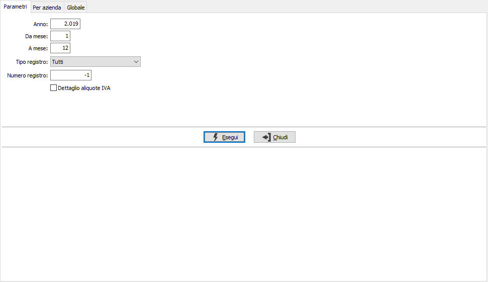
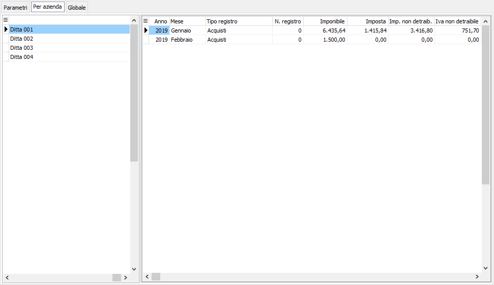
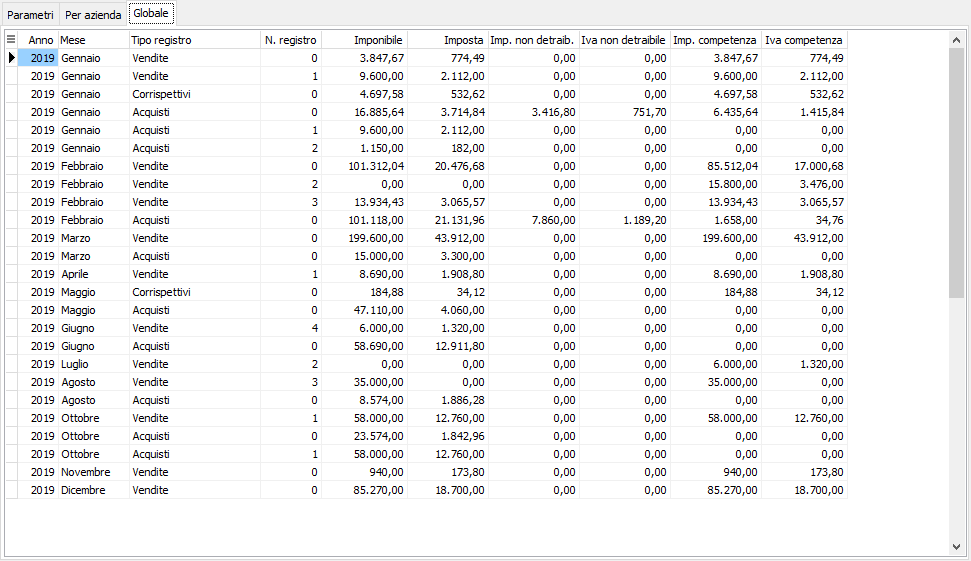
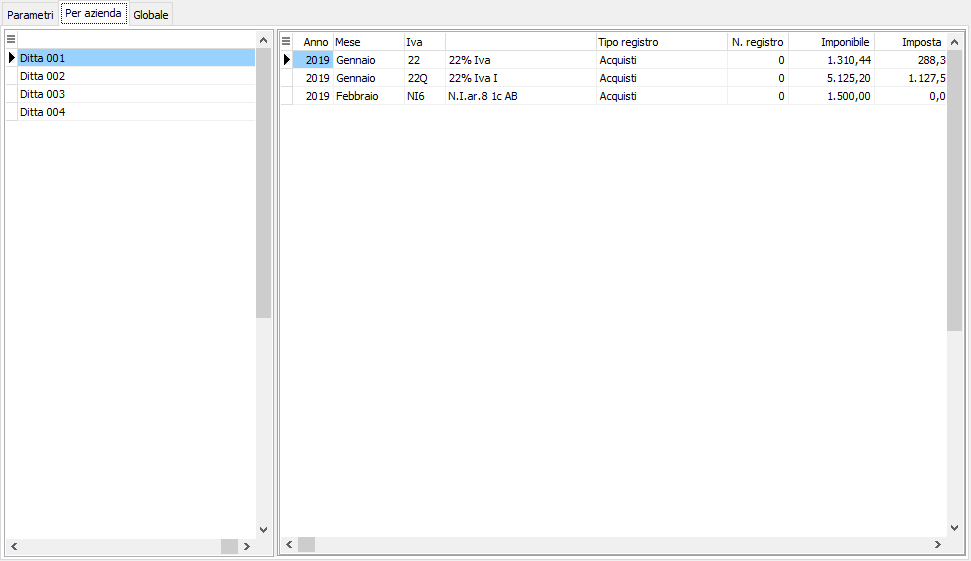
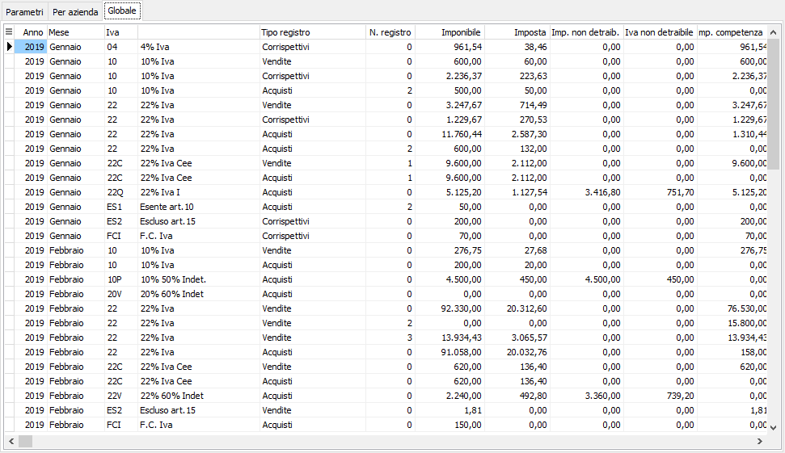

Analisi dati gruppo IVA
La scelta è utilizzabile solo dall’azienda capo gruppo; la funzione consente di analizzare i dati importati suddivisi per le aziende del gruppo o globali, generali o suddivisi per codice Iva.

I campi “Anno” e “Da mese”, “A mese” indicano il periodo per cui effettuare l’importazione, i campi sono preimpostati in base alla data di logon, ma possono essere variati e possono essere analizzati più periodi. Il campo “Tipo registro”, permette di indicare la tipologia di dati da analizzare, consente di indicare:
Tutti, sono analizzati tutti i progressivi Iva del periodo.
Vendite, sono analizzati solo i progressivi Iva relativi alle vendite
Corrispettivi, sono analizzati solo i progressivi relativi ai corrispettivi.
Acquisti, sono analizzati solo i progressivi Iva relativi agli acquisti.
Il campo “Numero registro”, permette di indicare il sezionale da analizzare, il campo è preimpostato a -1 che permette di analizzare tutti i registri.
La spunta su “Dettaglio aliquote IVA”, visualizza il dettaglio per aliquota.
La conferma sul campo “Esegui” permette di accedere alla linguetta delle informazioni suddivise “Per azienda”


oppure globale.

